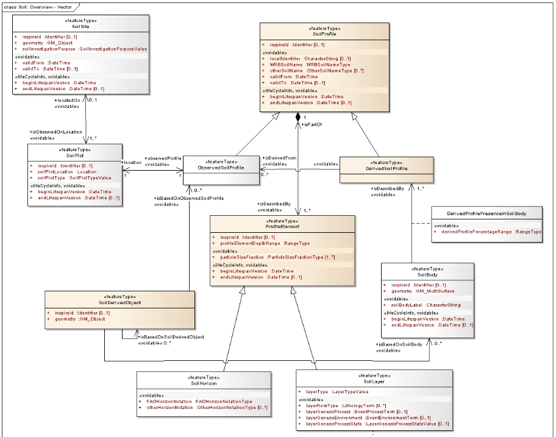

INSPIRE Soil in a relational database
This recipe describes an approach where data is harmonised to a common relational database.
The INSPIRE community has recently started an interesting activity to set up guidelines on how to share INSPIRE data as a relational database. More specifically a database in the GeoPackage format, which is a specialisation of the SQLite format. This will result in a series of new good practices on alternative approaches for data harmonization for various INSPIRE themes and use cases.
Idea behind the activity is that communities around a certain topic come together to develop a common relational model which substantially represents the INSPIRE UML model. This aspect can be validated by providing a mapping document which maps the relational model to the INSPIRE UML or GML model. This activity is supported by a template that communities can use to share their work with the wider INSPIRE community.
After an initial effort of defining and describing the alternative model, a typical workflow to publish harmonised data is as follows:
- Users download the GeoPackage template as an empty database
- Users populate the database from various sources using their favourite tool (r, python, FME, Hale studio, DBeaver)
- Users publish the database as an Atom service or OGC API Features.
Partial models for dedicated use cases
The INSPIRE Soil Model is designed to capture multiple soil data use cases: - capture profile descriptions in the field based on horizons - capture laboratory results from soil samples at fixed depths (layers) - predicted distribution of soil properties within soil bodies, linked to derived soil profiles
In many cases these use cases are not combined in a single database. By creating a dedicated database model for specific use cases (remove the unused database object), the database model will be smaller and easier to understand.

Use cases with combinations of data themes in a single database
In many cases, such as the Soil Erosion case, data is combined which is described in multiple INSPRE themes, such as soil, hydrology and environmental facilities. Some of the current GeoPackage implementation advertised in the INSPIRE MIF reference this type of combined use cases.
ISO25258 in a PostGres database
As part of the Soils4africa project ISRIC and partners are experimenting with a ISO25258 model, encoded in a relational PostGres database. It is interesting to evaluate if this effort can be ported to GeoPackage and form a starting point for the initial effort.
Read more
At the masterclass edition 2023 Stefania Morrone (Epsilon) presented an approach to use geopackage as an alternative encoding for Soil data.